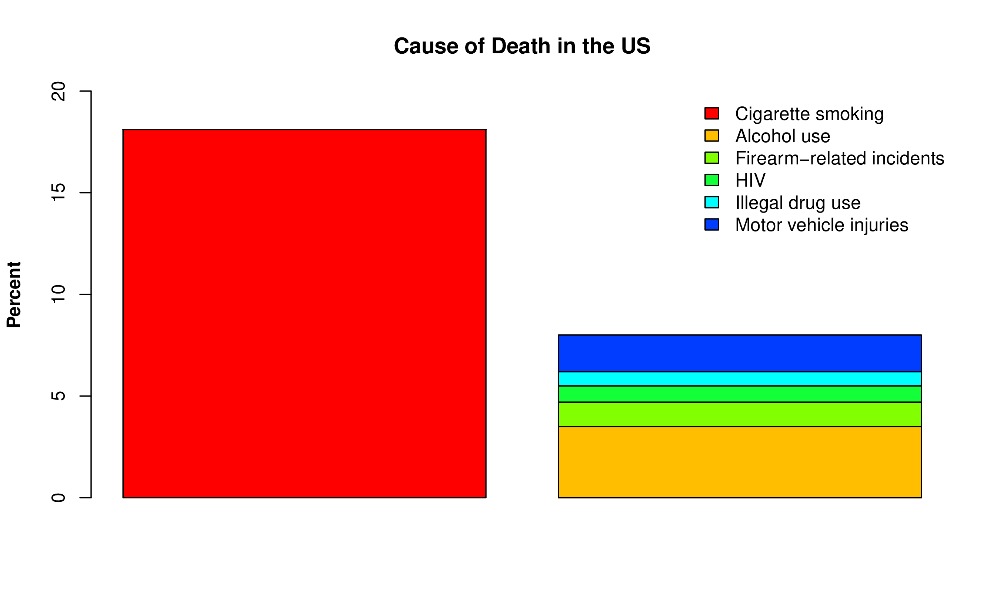

Social Learning Promotes Nicotine Intake
Hao Chen
Assistant Professor
University of Tennessee Health Science Center
Brain Awareness Day | October 1, 2016
Cigarette is a unique consumer product that when used exactly as intended, kills 480,000 people per year.
Quiz: Which one of the following causes the largest number of deaths in the US?
- Alcohol use
- Cigarette smoking
- Firearm-related incidents
- HIV
- Illegal drug use
- Motor vehicle injuries
You got it, but ...
Source: CDC
When do people start smoking?
Source: Monitoring the future, University of Michigan
Adolescents are particularly vulnerable
- About three out of four teen smokers end up smoking into adulthood, even if they intend to quit after a few years.
- A delay of one year in the age at first puff lowers the odds of becoming a regular smoker by 24%.
- High school students who smoked their first whole cigarette at old age were less likely to report being a regular smoker.
But nicotine is aversive!
 Coughing, nausea, dizziness, sickness, burning throat, headache...
Coughing, nausea, dizziness, sickness, burning throat, headache...
I don't care about the unpleasantness, because my friends are smoking!


Peer smoking is the number one predictor of smoking initiation.
How to study addiction using rodents?
- Classical conditioning (Bell ↔ Food)
- Operant conditioning, i.e., asking animals to work for reward.
- Poke nose into a hole
- Lick on a drinking spout
- Press a lever
- How much work will animals do to get rewards?
- One reward every n actions
- n can be a fixed number, a random number, or an increasing number
Operant licking for sucrose
You were pawned
How did the rats do?

Flavor cue does not support nicotine self-administration

Chen, et al., 2011, Neuropsychopharmacology
Modeling social learning in rats

Social learning promotes nicotine intake
Chen, et al., 2011, Neuropsychopharmacology
Nicotine self-administration with an appetitive vs aversive cues

Wang, et al., Psychopharmacology, 2016
Summary
- Cigarette smoking is deadly.
- Operant conditioning can be used to study addiction.
- Nicotine has aversive effects but is also very addictive.
- Social learning reverses the aversive effects of nicotine.
- In general, the rewarding value of a stimulus is modulate by the social context.
Acknowledgements
Current lab membersTengfei Wang Research AssociateYanyan Lin Sr. Research Assistant Pawandeep Kaur Research Assistant Matthew Longley Programmer
Past lab membersJie Shen, Wenyan Han, Reziwan Yimiti, Qinglin Wu, Katie Hiler, Hongxiao Song, Xia Hong |
CollaboratorsAbraham Palmer University of California, San DiegoLeah-Solberg Woods Wake Forest University Aron Geurts Medical College of Wisconsin Rachel Tyndale University of Torondo
FundingNIDAUTHSC |